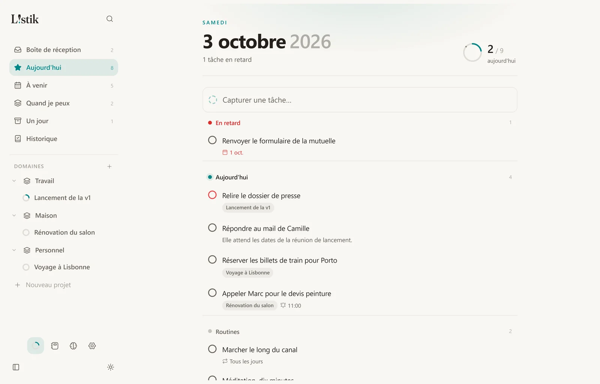
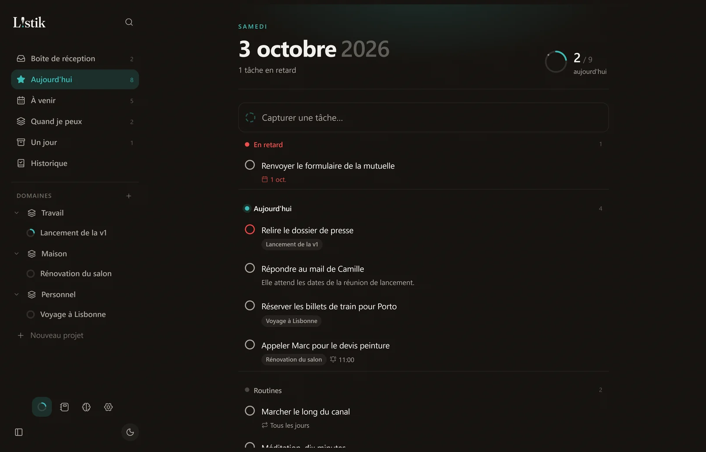
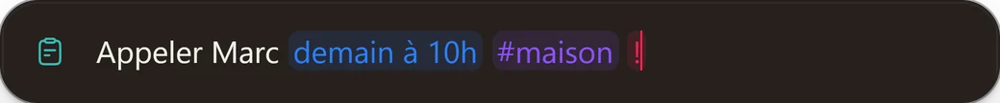
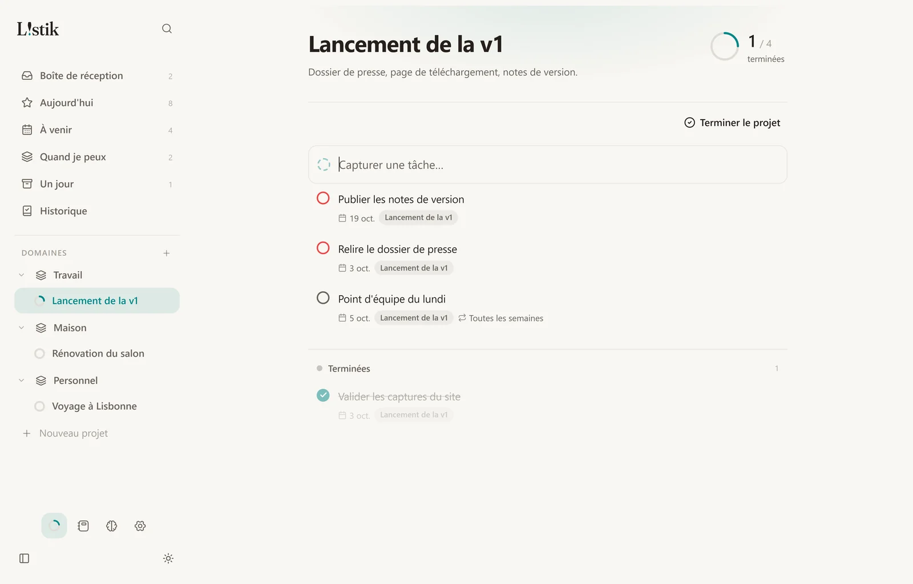
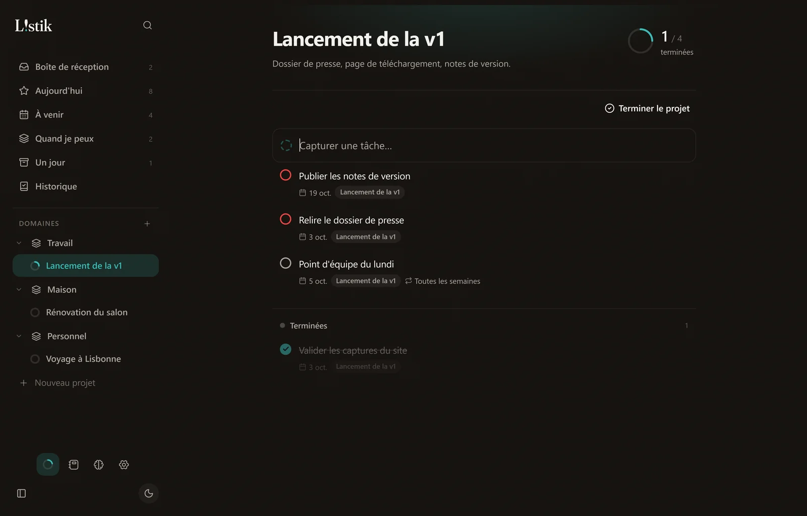
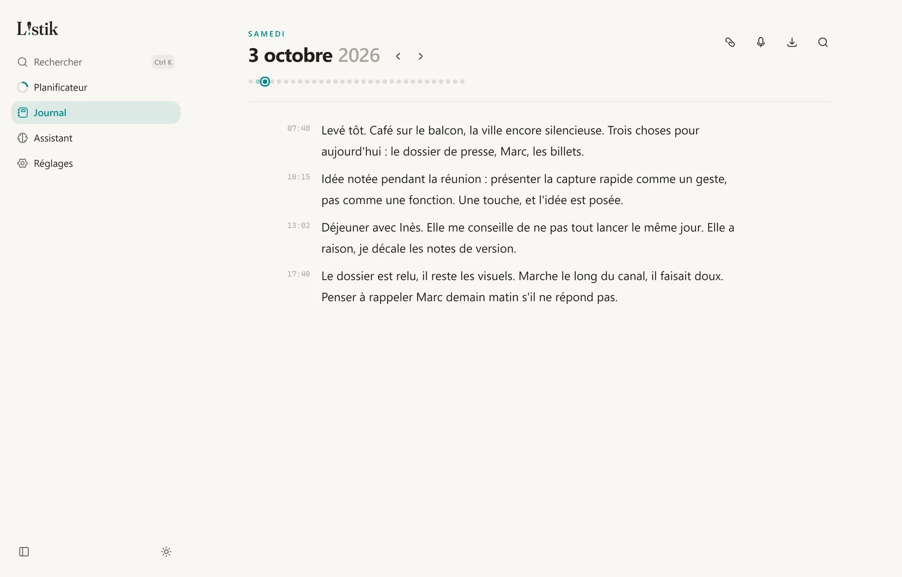
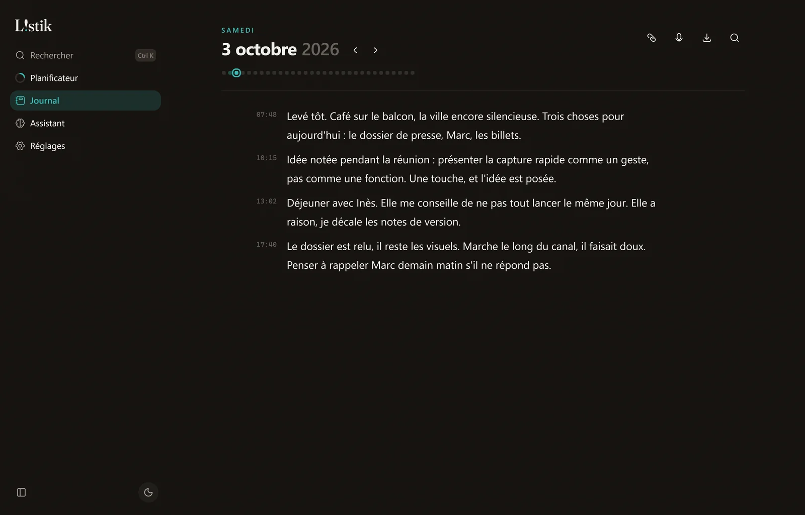

Une touche,
l’idée est posée.
Listik note vos tâches, vos pensées et vos questions sans vous faire quitter ce que vous faites. Puis il les range dans un planificateur et un journal, sur votre ordinateur.



Alt+Q,
de n’importe où.
Une petite fenêtre s’ouvre par-dessus votre travail. Écrivez comme vous parlez : Listik repère la date, le projet et la priorité, range la tâche, puis vous rend la main.
- Une tâche pour le planificateur.
- Une pensée pour la page du jour.
- Une question pour votre assistant.
- Quand
- Vendredi
- Projet
- Lisbonne
- Priorité
- Haute
Démonstration de la vraie syntaxe : dans Listik, un simple « ! » marque une tâche prioritaire. C’est aussi le point d’exclamation du logo.
Un planificateur qui ne crie pas.
Chaque tâche trouve sa place, sans tableau de bord à surveiller. Les projets se remplissent comme un anneau, les routines reviennent seules, les rappels arrivent à l’heure.
- Boîte de réception, Aujourd’hui, À venir, Un jour
- Domaines et projets, avec leurs échéances
- Routines, rappels et priorités


Un journal pour garder la trace.
Une page par jour, écrite au fil des heures. Ajoutez une photo, un PDF ou une note vocale. Une idée notée avec Alt+Q y arrive directement.
- Des blocs horodatés, faciles à reprendre
- Photos, PDF, documents et notes vocales
- Recherche dans toutes vos pages


Votre assistant,
pas le nôtre.
Listik se branche sur l’assistant IA que vous utilisez déjà. Il répond à vos questions sur votre journée et peut créer ou modifier vos tâches. Sans lui, Listik fonctionne tout aussi bien.
- Claude Code
- Codex CLI
- Antigravity CLI
- OpenCode
La couleur, c’est vous qui la choisissez.
Listik n’impose pas de couleur. Six accents vous attendent dans les réglages, et même la goutte du logo les suit. Essayez :
Vos données restent sur votre ordinateur.
Aucun compte
Vos tâches et votre journal sont enregistrés sur votre ordinateur. Listik n’envoie rien, sauf si vous utilisez l’assistant : vos questions passent alors par l’outil que vous avez branché, selon ses propres conditions.
Une sauvegarde en un fichier
Exportez tout depuis les réglages, et restaurez-le sur un autre ordinateur.
Des mises à jour signées
Listik vous propose les nouvelles versions et refuse toute mise à jour dont la signature ne correspond pas. Vous choisissez le moment.
Open source
Le code est public, sous licence MIT. Le lire sur GitHub.
Prêt quand vous l’êtes.
Télécharger pour WindowsRecherche de la dernière version…
macOS 13.3 ou plus récent, Mac Apple Silicon ou Intel. Version d’essai : pas encore éprouvée sur Mac, dites-nous ce qui cloche. Toutes les versions
Windows 10 ou 11, 64 bits. Préférer le paquet .msi · Toutes les versions
Au premier lancement
L’installateur n’est pas encore signé par un certificat Microsoft. Windows affichera donc « Windows a protégé votre ordinateur ».
- Cliquez sur Informations complémentaires.
- Puis sur Exécuter quand même.
Cela ne concerne que l’installation. Les mises à jour, elles, sont signées et vérifiées par Listik.
Au premier lancement
L’app n’est pas encore notarisée par Apple. macOS refusera donc de l’ouvrir la première fois, en disant ne pas pouvoir vérifier qu’elle est sans danger.
- Ouvrez le fichier .dmg et glissez Listik dans Applications.
- Ouvrez Listik, puis fermez l’alerte avec Terminé.
- Dans Réglages Système › Confidentialité et sécurité, cliquez sur Ouvrir quand même, puis confirmez.
Cela ne concerne que la première ouverture. Les mises à jour, elles, sont signées et vérifiées par Listik.
Questions fréquentes
Listik est-il vraiment gratuit ?
Oui. Il n’y a ni abonnement ni version payante. Le code est publié sous licence MIT.
Où sont enregistrées mes données ?
Dans un fichier sur votre ordinateur, sans compte. Seules la vérification des mises à jour et l’assistant utilisent Internet ; l’assistant passe par l’outil que vous avez branché, selon ses propres conditions. Depuis les réglages, vous pouvez exporter une sauvegarde et la ranger où vous voulez.
Faut-il un assistant IA pour s’en servir ?
Non. La capture, le planificateur et le journal fonctionnent seuls. L’assistant est une option, si un outil compatible est déjà installé sur votre ordinateur.
Et sur Mac ou Linux ?
Pas pour le moment : Listik est pensé et testé pour Windows.
Une version d’essai existe pour Mac (macOS 13.3 ou plus récent). Elle n’a pas encore été éprouvée autant que la version Windows : vos retours sont les bienvenus. Pas de version Linux pour le moment.
Comment se font les mises à jour ?
Listik vérifie au démarrage si une nouvelle version existe et vous la propose. Rien ne s’installe sans votre accord.